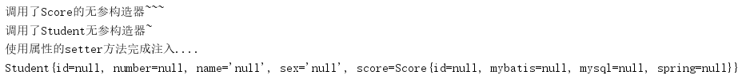
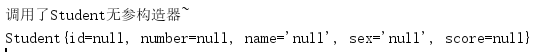
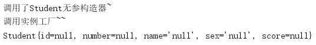
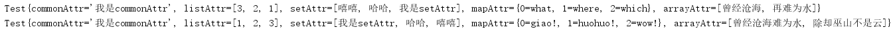

Spring是一个生产和管理其容器内的Bean的工厂，如果要使用这个工厂来生产和管理Bean，需要在Spring的配置文件中配置Bean，Spring框架支持XML和Properties两种格式的配置文件，但是实际中常用的是XML格式的文件。XML配置文件的根元素是 <beans> ，其内包含了多个 <bean> 子元素，每个 <bean> 元素定义一个Bean， 并描述Bean是如何装配到Spring容器中的 。 <bean> 常用属性及其子元素如下表：
| 属性或子元素名称 | 描述 |
|---|---|
| id | Bean在Spring中的唯一标识 |
| class | Bean的具体实现类 |
| scope | 指定Bean的作用域 |
<constructor-arg> |
<bean>元素的子元素，使用构造方法注入 |
<property> |
<bean>元素的子元素，用于设置一个属性（利用属性的setter方法注入） |
<list> |
<bean>元素的子元素，用于封装List或者数组类型的依赖注入 |
<map> |
<bean>元素的子元素，用于封装Map类型的依赖注入 |
<set> |
<bean>元素的子元素，用于封装Set类型的依赖注入 |
<entry> |
<bean>元素的子元素，用于设置一个键值对 |
在Spring中实例化Bean有三种方式：
构造方法实例化就是调用Bean的无参构造器来实例化Bean。只需在指定相应的 <bean> 元素就行了（保证Bean有无参构造器）。一个例子如下：
Student实体类的代码如下：
public class Student {
private Integer id,number;
private String name,sex;
private Score score;
public Student() {
System.out.println("调用了Student无参构造器~");
}
public Student(Integer id){
this.id=id;
}
public Integer getId() {
return id;
}
public void setId(Integer id) {
this.id = id;
}
public Integer getNumber() {
return number;
}
public void setNumber(Integer number) {
this.number = number;
}
public String getName() {
return name;
}
public void setName(String name) {
this.name = name;
}
public String getSex() {
return sex;
}
public void setSex(String sex) {
this.sex = sex;
}
public Score getScore() {
return score;
}
public void setScore(Score score) {
this.score = score;
System.out.println("使用属性的setter方法完成注入....");
}
@Override
public String toString() {
return "Student{" +
"id=" + id +
", number=" + number +
", name='" + name + '\'' +
", sex='" + sex + '\'' +
", score=" + score +
'}';
}
}Score实体类的代码如下：
public class Score {
private Integer id;
private Float mybatis,mysql,spring;
public Score(Integer id, Float mybatis, Float mysql, Float spring) {
this.id = id;
this.mybatis = mybatis;
this.mysql = mysql;
this.spring = spring;
}
public Score() {
System.out.println("调用了Score的无参构造器~~~");
}
public Integer getId() {
return id;
}
public void setId(Integer id) {
this.id = id;
}
public Float getMybatis() {
return mybatis;
}
public void setMybatis(Float mybatis) {
this.mybatis = mybatis;
}
public Float getMysql() {
return mysql;
}
public void setMysql(Float mysql) {
this.mysql = mysql;
}
public Float getSpring() {
return spring;
}
public void setSpring(Float spring) {
this.spring = spring;
}
@Override
public String toString() {
return "Score{" +
"id=" + id +
", mybatis=" + mybatis +
", mysql=" + mysql +
", spring=" + spring +
'}';
}
}XML配置文件如下：
<?xml version="1.0" encoding="UTF-8"?>
<beans xmlns="http://www.springframework.org/schema/beans"
xmlns:xsi="http://www.w3.org/2001/XMLSchema-instance"
xsi:schemaLocation="http://www.springframework.org/schema/beans http://www.springframework.org/schema/beans/spring-beans.xsd">
<!--将Score交给Spring管理-->
<bean id="score" class="pojo.Score"/>
<!--将Student交给Spring管理-->
<bean id="student" class="pojo.Student">
<property name="score" ref="score"/>
</bean>
</beans>测试代码如下：
public class Main {
public static void main(String[] args) {
ApplicationContext applicationContext =new ClassPathXmlApplicationContext("spring/applicationContext.xml");
Student student=(Student)applicationContext.getBean("student");
System.out.println(student);
}
}测试输出如下：

此种方法要求创建一个静态工厂，在XML配置文件种配置 <bean> 的时候，class属性指定静态工厂类，同时 factory-method属性指定静态工厂类中的静态方法 。一个案例如下：
静态工厂类代码如下（Student实体和上面的例子一样）：
public class StudentBeanFactory {
private static final Student studentBean=new Student();
public static Student getInstance(){
return studentBean;
}
}XMl配置文件如下：
<?xml version="1.0" encoding="UTF-8"?>
<beans xmlns="http://www.springframework.org/schema/beans"
xmlns:xsi="http://www.w3.org/2001/XMLSchema-instance"
xsi:schemaLocation="http://www.springframework.org/schema/beans http://www.springframework.org/schema/beans/spring-beans.xsd">
<bean id="studentFactory" class="utils.StudentBeanFactory" factory-method="getInstance"/>
</beans>测试代码如下：
public class Main {
public static void main(String[] args) {
ApplicationContext applicationContext =new ClassPathXmlApplicationContext("spring/applicationContext.xml");
Student student=(Student)applicationContext.getBean("studentFactory");
System.out.println(student);
}
}测试结果如下：

此种方式需要创建一个实例工厂，在XML配置文件中需要配置 <bean> 的 factory-bean属性指向实例工厂，且factory-method属性指向工厂的实例方法 。一个例子如下：
实例工厂代码如下（Student实体和上面的例子一样）：
public class StudentFactory {
private static final Student instance=new Student();
public Student getInstance(){
System.out.println("调用实例工厂~~");
return instance;
}
}XML配置文件如下（先利用Spring实例化工厂，再调用实例工厂）：
<?xml version="1.0" encoding="UTF-8"?>
<beans xmlns="http://www.springframework.org/schema/beans"
xmlns:xsi="http://www.w3.org/2001/XMLSchema-instance"
xsi:schemaLocation="http://www.springframework.org/schema/beans http://www.springframework.org/schema/beans/spring-beans.xsd">
<bean id="studentFactory" class="utils.StudentFactory"/>
<bean id="student" factory-bean="studentFactory" factory-method="getInstance"/>
</beans>测试代码如下：
public class Main {
public static void main(String[] args) {
ApplicationContext applicationContext =new ClassPathXmlApplicationContext("spring/applicationContext.xml");
Student student=(Student)applicationContext.getBean("student");
System.out.println(student);
}
}测试结果如下：

Bean的作用域详情如下表：
| 作用域名称 | 描述 |
|---|---|
| singleton | 默认的作用域，使用此定义域的Bean在Spring容器中只有一个Bean实例 |
| property | Spring容器每次获取property定义的Bean，容器都将创建一个新的Bean实例 |
| request | 在一次HTTP请求中，容器将返回一个Bean实例，不同的HTTP请求返回不同的Bean实例 |
| session | 在一个HTTP Session中，容器将返回同一个Bean实例 |
| application | 为每个ServletContext对象创建一个实例，同一个应用共享一个Bean实例 |
| websocket | 为每个WebSocket对象创建一个Bean实例 |
Bean的装配就是Bean依赖注入的方式，Spring容器支持基于XML配置的装配、基于注解的装配以及自动装配等多种方式。最常用的就是基于注解的装配。
在Spring Ioc的“依赖注入的类型”中提到了简单的基于XML配置的装配，接下来一个复杂的综合案例如下：
一个实体类代码如下：
public class Test {
private String commonAttr;
private List<Integer> listAttr;
private Set<String> setAttr;
private Map<Integer,String> mapAttr;
private String[] arrayAttr;
public Test(){}
public Test(String commonAttr, List<Integer> listAttr, Set<String> setAttr, Map<Integer, String> mapAttr, String[] arrayAttr) {
this.commonAttr = commonAttr;
this.listAttr = listAttr;
this.setAttr = setAttr;
this.mapAttr = mapAttr;
this.arrayAttr = arrayAttr;
}
public String getCommonAttr() {
return commonAttr;
}
public void setCommonAttr(String commonAttr) {
this.commonAttr = commonAttr;
}
public List<Integer> getListAttr() {
return listAttr;
}
public void setListAttr(List<Integer> listAttr) {
this.listAttr = listAttr;
}
public Set<String> getSetAttr() {
return setAttr;
}
public void setSetAttr(Set<String> setAttr) {
this.setAttr = setAttr;
}
public Map<Integer, String> getMapAttr() {
return mapAttr;
}
public void setMapAttr(Map<Integer, String> mapAttr) {
this.mapAttr = mapAttr;
}
public String[] getArrayAttr() {
return arrayAttr;
}
public void setArrayAttr(String[] arrayAttr) {
this.arrayAttr = arrayAttr;
}
@Override
public String toString() {
return "Test{" +
"commonAttr='" + commonAttr + '\'' +
", listAttr=" + listAttr +
", setAttr=" + setAttr +
", mapAttr=" + mapAttr +
", arrayAttr=" + Arrays.toString(arrayAttr) +
'}';
}
}XML配置文件如下（演示了了构造器注入和setter注入）：
<?xml version="1.0" encoding="UTF-8"?>
<beans xmlns="http://www.springframework.org/schema/beans"
xmlns:xsi="http://www.w3.org/2001/XMLSchema-instance"
xsi:schemaLocation="http://www.springframework.org/schema/beans http://www.springframework.org/schema/beans/spring-beans.xsd">
<!--利用构造器注入-->
<bean id="test" class="pojo.Test">
<constructor-arg index="0" value="我是stringAttr"/>
<constructor-arg index="1">
<list value-type="java.lang.Integer">
<value>3</value>
<value>2</value>
<value>1</value>
</list>
</constructor-arg>
<constructor-arg index="2">
<set value-type="java.lang.String">
<value>嘻嘻</value>
<value>哈哈</value>
<value>我是setAttr</value>
</set>
</constructor-arg>
<constructor-arg index="3">
<map key-type="java.lang.Integer" value-type="java.lang.String">
<entry key="0" value="what"/>
<entry key="1" value="where"/>
<entry key="2" value="which"/>
</map>
</constructor-arg>
<constructor-arg index="4">
<array value-type="java.lang.String">
<value>曾经沧海</value>
<value>再难为水</value>
</array>
</constructor-arg>
</bean>
<!--利用属性的setter方式注入-->
<bean id="test1" class="pojo.Test">
<property name="commonAttr" value="我是commonAttr"/>
<property name="listAttr">
<list value-type="java.lang.Integer">
<value>1</value>
<value>2</value>
<value>3</value>
</list>
</property>
<property name="setAttr">
<set value-type="java.lang.String">
<value>我是setAttr</value>
<value>哈哈</value>
<value>嘻嘻</value>
</set>
</property>
<property name="mapAttr">
<map key-type="java.lang.Integer" value-type="java.lang.String">
<entry key="0" value="giao!"/>
<entry key="1" value="huohuo!"/>
<entry key="2" value="wow!"/>
</map>
</property>
<property name="arrayAttr">
<array value-type="java.lang.String">
<value>曾经沧海难为水</value>
<value>除却巫山不是云</value>
</array>
</property>
</bean>
</beans>测试代码如下：
public class Main {
public static void main(String[] args) {
ApplicationContext applicationContext =new ClassPathXmlApplicationContext("spring/applicationContext.xml");
Test test=(Test)applicationContext.getBean("test");
System.out.println(test);
Test test1=(Test)applicationContext.getBean("test1");
System.out.println(test1);
}
}测试结果如下：

如果应用中有大量的Bean，则通过XML装配方式则会显得麻烦，所以推荐使用基于注解的装配方式。以下是Spring中常用的几种注解：
Notice：在Spring4.0以上的版本中，配置注解指定包中的注解进行扫描前需要事先导入Spring AOP的Jar包。